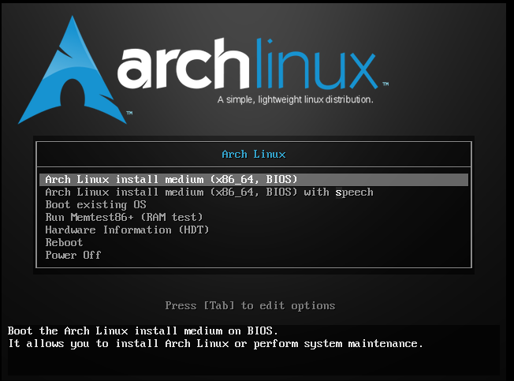
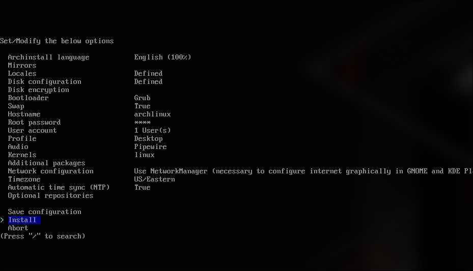
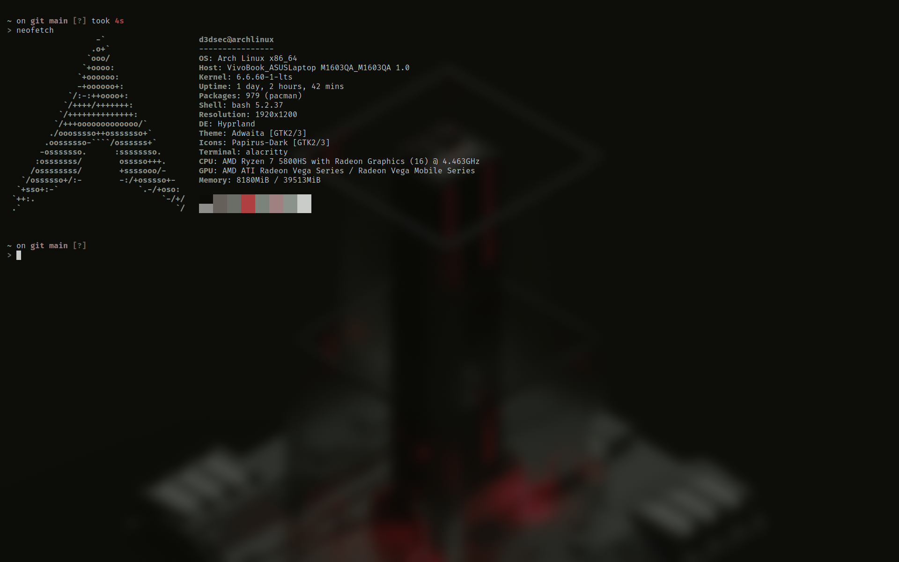

IMPORTANT!
- Turn off Secure Boot
- 8+ gb flashdrive
- A Computer
Installing Arch (Main OS)
1. Downloading the iso
# Go grab the iso off the official archlinux.org page
- https://archlinux.org/download/ -> Download latest iso release
- https://geo.mirror.pkgbuild.com/iso/2024.11.01/ -> If you dont know what to pick
# Once iso is installed whip up some balena etcher
- https://etcher.balena.io/#download-etcher -> Balena Download
2. Get Balena Running
# We need to unzip the zip file so go ahead and run this command ...
- unzip ~/Downloads/balenaEtcher-linux-x64-1.19.25.zip . # Zip name will differ based on release version
# Once unzipped go ahead an run ...
- cd balenaEtcher-linux-x64-1.19.25/balenaEtcher-linux-x64 && ./balena-etcher
- Once balena is up and running select flash from file and navigate to your downloads folder. Select the archlinux iso
- After selecting the iso to flash go ahead and plug your 8+gb usb stick into the device and it will immediatly pick up on it and select it for you.
- Last step for this section is click flash and put your password in and begin the flash.
3. Entering The boot menu and selecting to boot from the usb we have just created.
# Your going to have to lookup your computers specs but for mine which is a asus vivobook 16 it is esc for me to enter the boot.
# You will be prompted with your ssd, your os and two partitions of the usb select partition 1.

4. Entering the archinstall from terminal
# Type archinstall
# This will direct you to this screen below this section. I will list the key sections you will need you must do ...
- Select mirror region you are in so whatever country you are located inside of
- Use a best-effort default partition layout and check off your storage device
- I select ext4 its up to you and you can if you want to create seperate partitions for home you can I dont
- Set all passwords and user account
- For Profile Select either minimal for the hyprland experience. For this install I will just select gnome, hyprland is for another time.
- Pipewire audio and lts kernel is my choices for those categories
- Type git and sudo for additional Packages
- Network Configuration should be set to Use NetworkManager
- Select time zone you are in and then finally hit that install button


5. Setting up yay
# Setting up yay the right way make sure you arent root when installing This
- git clone https://aur.archlinux.org/yay.git
- cd yay-git
- makepkg -si
- After installing try yay vscode
6. Well that about sums it up for this post, hope you enjoyed installing the best operating system ever lol!
# Helpful links after installing arch
- https://github.com/mylinuxforwork/dotfiles/blob/main/README.md